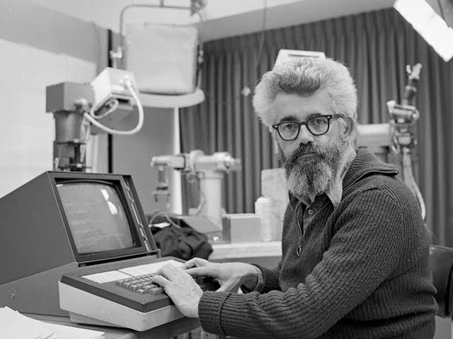
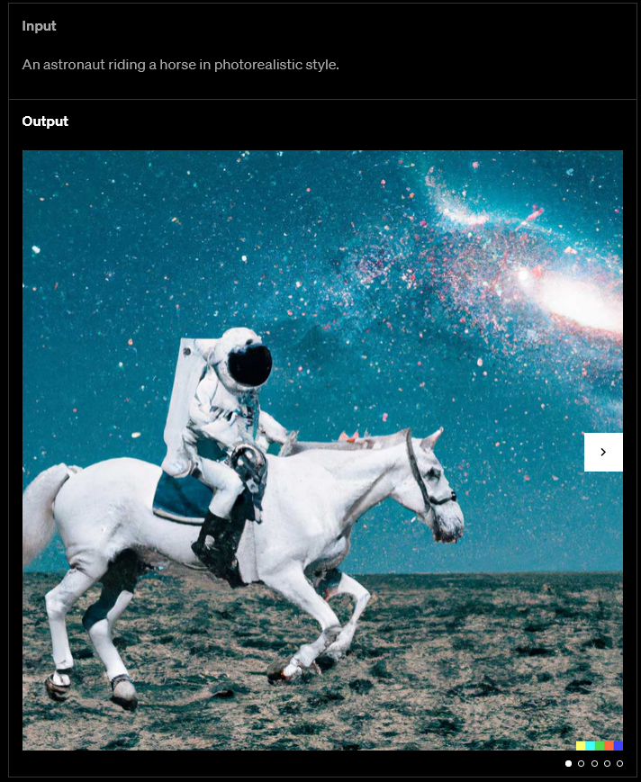

"Artificial Intelligence (AI) refers to the development of computer systems that can perform tasks that typically require human intelligence, such as problem-solving, learning, and decision-making." -ChatGPT
For the past year, the field of AI has had a significant advancement in what can be considered to be a particurally short amount of time. With the creation of ChatGPT, C.ai, and Stable DIffusion. AI has become significantly more advanced since it's creation in the 1950s.
The history of AI.
1950 -1997.
1950.

Alan Turing || 1912-1954.
In 1950, a man known as Alan Turing published a seminal paper titled "Computing Machinery and Intelligence," introducing the Turing test and the concept of AI.
1951.
Marvin Minsky and Dean Edmonds developed the first artificial neural network (ANN) called SNARC.
1956.
John McCarthy || 1927-2011.
John McCarthy, Marvin Minsky, Nathaniel Rochester and Claude Shannon coined the term artificial intelligence in a proposal for a workshop widely recognized as a founding event in the AI field.
1958.
Frank Rosenblatt developed the perceptron, an early ANN that could learn from data and became the foundation for modern neural networks.
John McCarthy developed the programming language Lisp, which was quickly adopted by the AI industry and gained enormous popularity among developers.
1966.
Joseph Weizenbaum created Eliza, one of the more celebrated computer programs of all time, capable of engaging in conversations with humans and making them believe the software had humanlike emotions.
Stanford Research Institute developed Shakey, the world's first mobile intelligent robot that combined AI, computer vision, navigation and NLP. It's the grandfather of self-driving cars and drones.
1997.

IBM's Deep blue in a match against Garry Kasparov, world chess champion.
IBM's Deep Blue defeated Garry Kasparov in a historic chess rematch, the first defeat of a reigning world chess champion by a computer under tournament conditions.
2000 - 2023.
2006.
Fei-Fei Li started working on the ImageNet visual database, introduced in 2009, which became a catalyst for the AI boom and the basis of an annual competition for image recognition algorithms
2011.
Apple released Siri, a voice-powered personal assistant that can generate responses and take actions in response to voice requests.
2012.
Geoffrey Hinton, Ilya Sutskever and Alex Krizhevsky introduced a deep CNN architecture that won the ImageNet challenge and triggered the explosion of deep learning research and implementation.
2014.
Ian Goodfellow and colleagues invented generative adversarial networks, a class of machine learning frameworks used to generate photos, transform images and create deepfakes.
Diederik Kingma and Max Welling introduced variational autoencoders to generate images, videos and text.

The icon of Facebook's Deepface.
Facebook developed the deep learning facial recognition system DeepFace, which identifies human faces in digital images with near-human accuracy.
2017.
Stanford researchers published work on diffusion models in the paper "Deep Unsupervised Learning Using Nonequilibrium Thermodynamics." The technique provides a way to reverse-engineer the process of adding noise to a final image.
British physicist Stephen Hawking warned, "Unless we learn how to prepare for, and avoid, the potential risks, AI could be the worst event in the history of our civilization."
2018.
OpenAI released GPT (Generative Pre-trained Transformer), paving the way for subsequent LLMs.
2020.
Nvidia announced the beta version of its Omniverse platform to create 3D models in the physical world.
Open AI released the GPT-3 LLM consisting of 175 billion parameters to generate humanlike text models.
2021.
An example of an image created using Dall-E.
OpenAI introduced the Dall-E multimodal AI system that can generate images from text prompts.
2023.
OpenAI announced the GPT-4 multimodal LLM that receives both text and image prompts.
Elon Musk, Steve Wozniak and thousands more signatories urged a six-month pause on training "AI systems more powerful than GPT-4."
Conclusion.
We can only begin to envision AI's continuing technological advancements and influences in business processes, manufacturing, healthcare, financial services, marketing, customer experience, workforce environments, education, agriculture, law, IT systems and management, cybersecurity, and ground, air and space transportation.
Today's developments are advancing AI's ultimate goal of achieving artificial general intelligence. Along these lines, neuromorphic processing shows promise in mimicking human brain cells, enabling computer programs to work simultaneously instead of sequentially. Amid these and other mind-boggling advancements, issues of trust, privacy, transparency, accountability, ethics and humanity have emerged and will continue to clash and seek levels of acceptability among business and society.